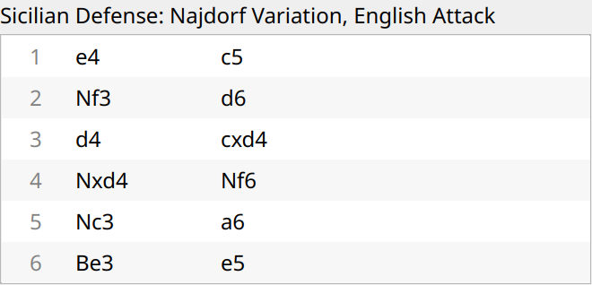
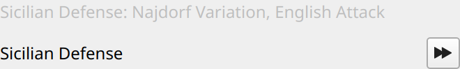
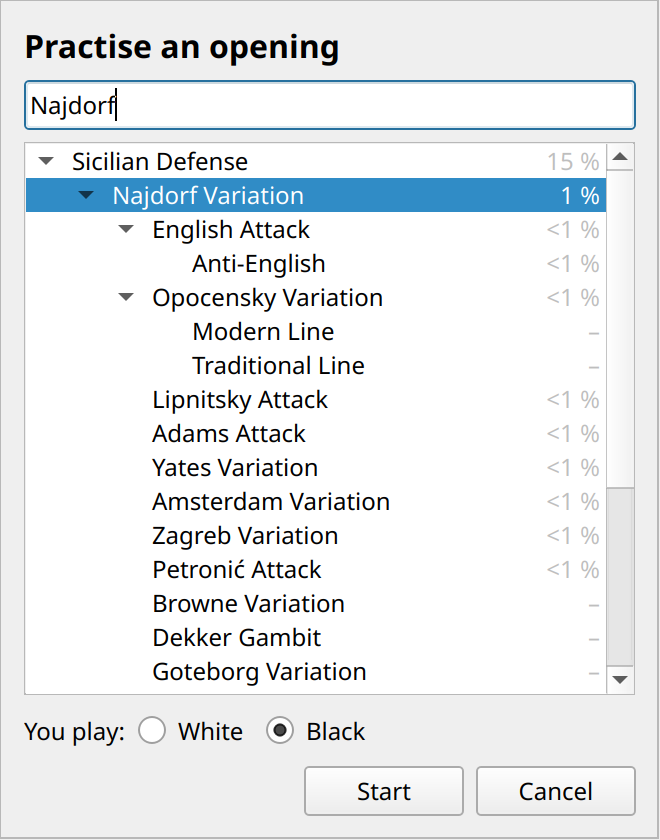
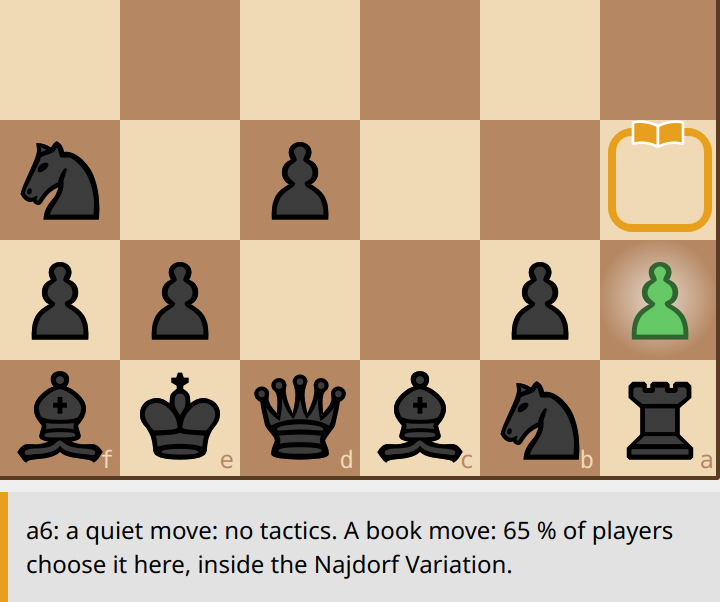
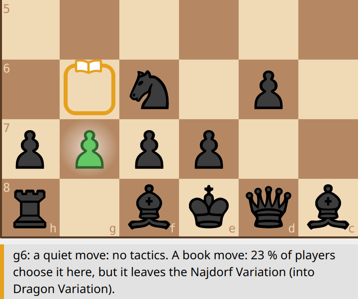
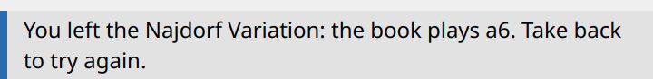

Buster Coach knows about 3,900 named openings and variations, and a book of the moves people really play in them, counted from a million games on lichess.org. Both are built in; nothing is looked up online.
The opening's name. The strip above the move list names the opening you're in, as precisely as the game's moves allow: "Sicilian Defense", then "Sicilian Defense: Najdorf Variation", then "…, English Attack". Once the game leaves the named lines, the strip keeps the last name it had — a Najdorf at move 25 is still a Najdorf — and turns grey when the position is no longer in the book. Hover over the name to see its ECO code (B90: the classic catalogue of openings). The strip shows with Guidance (Guided and Full coaching); the name is saved with the game at every level.

The strip above the move list, after 6. Be3 e5.

Top: later in the same game, out of the book: the name stays, in grey. Bottom: in opening practice, ⏩ at the strip's right end (see below).
The opponent plays from the book. In the opening the opponent often chooses a book move, picked by how often people play it, so your games don't all start the same way. How long it stays in the book follows its strength: at level 1 only its first move, from level 7 up to its 7th move. A book move costs it almost no clock time.
Book moves in the coaching. With the box on a book move, a small open book sits on the box's edge (Full coaching; The signs on the board), and the why card adds the book's share: "A book move: 65 % of players choose it here." The box's colour stays the coach's own verdict: a popular move can still be amber or even red.
Practise an opening (Game → Practise an opening…). The side panel shows every named opening as a tree: the openings, their variations, and the lines inside those. Within each opening the most popular come first, with their share of all the book's games (a "–": the book never reaches that line; you can still practise it, and the opponent then plays the named line move by move). Type in the search field to find one, choose the colour you want to play, and press Start.

Searching for the Najdorf, to practise it with Black.
The game starts from the first move. The opponent plays its moves of the opening at once; where the book knows several common moves that stay inside your opening, it picks one by how often it's played, so the practice varies. You try to find your moves. The status bar says "Opening practice" while you're inside.


After 5. Nc3, with Black. Left: 5... a6 — the Najdorf's move, a filled book. Right: 5... g6 is a book move too, but it leaves the Najdorf for the Dragon: the book is hollow. (Both amber here: the coach's own verdict on each move.)
If you play a move that leaves the opening, a card says so, with the moves the book plays instead:

Take back (Ctrl+Z) to try again, or play on: after the opening, practice is a normal game, with all the coaching of your level.